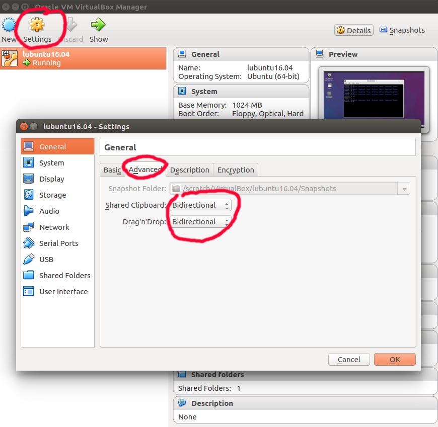
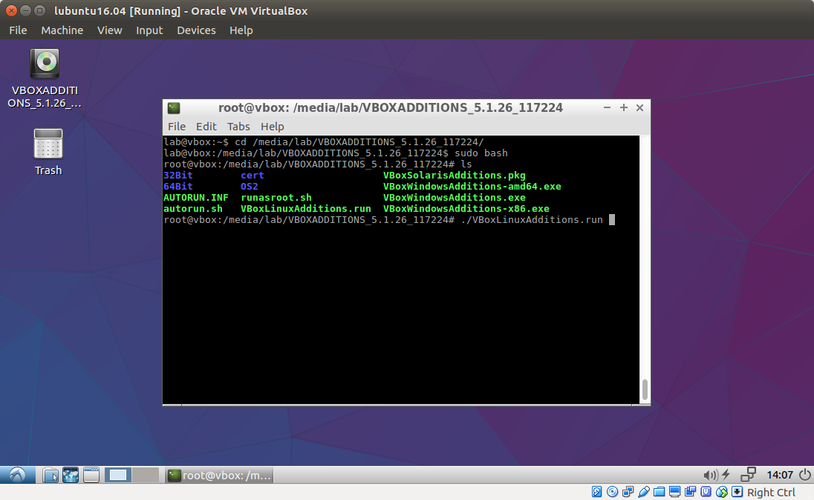
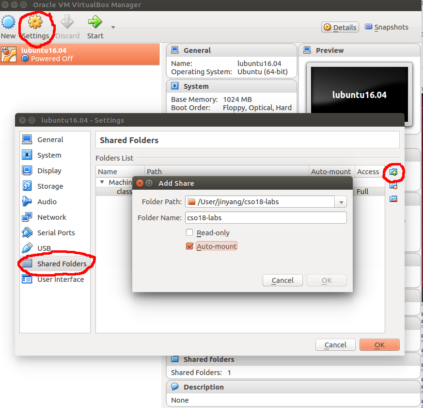

Lab assignments
Lab 1 C programmingLab 2 Rabin-Karp lab
Lab 3 Binary lab
Lab 4 Malloc
Lab 5 (part 1) Basic Logic Design
Lab 5 (part 2) ALU
Collaboration and Integrity Policy
Please read this carefully. We will run plagiarism detection software on all submitted code.
Acknowledgements:
Lab1 is partly due to Mike Walfish. Lab5 is due to Berkeley's CS61c.
Lab Setup Instructions
Set up VirtualBoxFAQs on setting up VirtualBox
Set up Git repository
FAQs on gits
Setting up Virtual Box
We will grade your labs on an Ubuntu 18.04 machine. We recommend you do the labs in the the class virtual machine (based on Ubuntu 18.04).For a basic virtual machine setup, perform the following four steps:
- Step 1. Install VirtualBox. Download the Virtualbox virtual machine monitor 6.0.10. If your laptop runs MacOS, download this. If your laptop runs Windows, download this.
- Step 2. Download class virtual machine image. Download this file. This file is fairly large (>1.8GB), so you need to be patient. We have also put a copy of the image on Dropbox here.
- Step 3. Launch Virtualbox and import class VM image. On the Virtualbox application toolbar, under the Menu item "File", click on "Import appliance...", and choose the previously downloaded lubuntu18.04.ova file when prompted.
- Step 4. Launch Lubuntu Linux and install necessary packages. After importing, start the virtual machine named "lubuntu" and log in using the username and password given in Piazza). Once you are logged in, start a terminal once you logged in by clicking the "LXterminal" icon on the desktop (alternatively, use the short-cut key combination "Ctrl-Alt-t").
For more advanced tune-ups to help your productivity, do the following:
- Enable copy-n-paste between your native OS (e.g. MacOS) and class VM. First, click the settings button in the VirtualBox window, and then click "advanced" tab, change the pulldown button of "Shared Clipboard" and "Drag'n'Drop" to "Bidirectional".

Launch class VM image and log in.
Under the "Devices" menu, click "Insert Guest Additions CD".
Start LXterminal, type cd /media/lab/VBox_GAs_5.2.24/. Become root by typing sudo bash. Afterwards, type ./VBoxLinuxAdditions.run.  Restart Virtual box and re-launch class VM. Now you should be able to do copy-n-paste between native OS and class VM.
- Mount a folder in native-OS in class VM. (Note that this option requires completing the previous option which installs the virtualbox guest additions.) Instead of writing code in class VM, you may want to write code in your native-OS (e.g. using sublime) and only execute the labs in class VM. In this case, you want to store lab files in a native folder (e.g. /User/jinyang/cso-labs) and mount the native folder in class VM, so changes made to lab files in native OS are instantly visible inside the class VM.
To mount a native folder in class VM, inside VirtualBox, click "Settings" button, and then click "Shared Folders" on the left. Click the add-share logo on the right hand side. Enter the "Folder path" in your native OS (e.g. /User/jinyang/cso-labs and "Folder name" (e.g. cso-labs) with "Auto-mount" selected. 
Launch class VM, open LXterminal once logged in. Create mount directory by typing sudo mkdir /mnt/cso-labs. Mount by typing sudo mount -t vboxsf -o uid=1000,gid=1000 cso-labs /mnt/cso-labs. From now on, the /mnt/cso-labs directory refers to the /User/jinyang/cso-labs directory in your native OS. If you reboot the VM, you will lose your mount. To keep it automatically mounted across reboots, add the following line (as root user) to your class VM's /etc/fstab file by typing:
sudo bash -c 'echo "cso-labs /mnt/cso-labs vboxsf uid=1000,gid=1000 0 0" >> /etc/fstab'
Note that if you choose to do your labs outside of the class virtual machine, we will not provide any technical support should you encounter any OS-related issues in doing the labs. Furthermore, should the results of your lab differ from what we have obtained by running the tests on Linux, we will use our test results in determining the grade.
FAQs on Virtual Box Setup
-
VT-x/AMD-V hardware acceleration is not available.
Virtualbox wants you to enable virtualization in BIOS. If you don't know how to do that, come to see one of the course staff.
- VM fails to launch and halts with either black screen or distorted image.
You should try to allocate more video memory to your VM. Shutdown your VM first. Then open "Settings", click "Display", and change "Video Memory" to a larger value.
- "Insert Guest Additions CD Image..." fails.
If on your VM desktop, there is an icon that appears like a CD, that means you inserted the CD image already. You cannot insert the CD image twice.
- Mount shared folder fails and get "protocol error".
When you add a shared folder in VM settings, you will specify a folder name. If you folder name is abcdefg, then when you mount your shared folder inside VM, you should change the command to sudo mount -t vboxsf -o uid=1000,gid=1000 abcdefg /mnt/cso-labs
- When typing in password, nothing happens.
That is a security feature. Terminal won't display your typed password because someone sitting next to you can see it and steal your password. Just continue to type your full password, and hit Enter
- How to resize the VM to full screen?
After you install the Guest Additions CD Image, in the VirtualBox Menu bar, click "View" then "Full-Screen Mode", then wait for a while. The first time switching to full screen requires patience. If it still does not work, uncheck "Full-Screen Mode" and then check "Full-Screen Mode", and wait for a while. Repeat until you run out of patience and decide to give up and use "Scaled Mode" instead...
- The command sudo unable to resolve host.
This is just a warning, you can ignore it. But if you really wants to get rid of the warning message, open up a terminal, type sudo sh -c 'echo "127.0.1.1\tvbox" >> /etc/hosts'
Setting up Git Repository
For each student in the class, we have created for him/her a corresponding private lab repository on Github.com. You will submit labs by pushing to your private repo on github.com (as many times as you want) and we will collect labs for grading after the lab deadline directly from Github.com. Below are the steps for setting up your the lab environment on your laptop. If you are not familiar with the git version control system, follow the resources here to get started.
- Cloning your lab repo locally
We recommend you keep your all lab code in a local directory called cso-labs. Create it by typing the following command in the terminal.
$ mkdir cso-labs
Now you are ready to initialize your lab repository. First, click on each lab's invitation link (posted in Piazza). Select your NYU email address to link your github account and create your lab repository on Github.
Next, in a VirtualBox terminal, clone your repo by typing the following (the following example is for Lab1):
$ cd cso-labs $ git clone https://github.com/nyu-cso-fa19/lab1-<YourGithubUsername>.git lab1
You will see that a directory named lab1 has been created under the cso-labs directory. This is the git repo for your lab assignment 1. Other labs are created similarly by cloning respective repositories.
- Saving changes while you are working on Labs
As you modify the skeleton files to complete the labs, you should frequently save your work to protect against laptop failures and other unforeseen troubles. You save the changes by first "committing" them to your local lab repo and then "pushing" those changes to the repo stored on github.com
$ git commit -am "saving my changes" $ git push origin master
Note that whenever you add a new file, you need to manually tell git to ``track it''. Otherwise, the file will not be committed by git commit. Make git track a new file by typing:$ git add <my-new-file>
After you've pushed your changes by typing git push origin master, they are safely stored on github.com. Even if your laptop catches on fire in the future, those pushed changes can still be retrieved. However, you must remember that doing git commit by itself does not save your changes on github.com (it only saves your changes locally). So, don't forget to type git push origin master.
To see if your local repo is up-to-date with your origin repo on github.com and vice versa, type git status
Handin Procedure
To handin your files, simply commit and push them to github.com by doing:$ git commit -am "saving all my changes and handing in" $ git push origin masterWe will fetch your lab files from Github.com at the specified deadline and grade them.
FAQs on Git repository
- What message should I fill in for git commit -am "message"
The "message" can be any string. But we ask you to leave something descriptive as message. In the future, when you check your git logs, this message helps you recall what you did for this commit. We (CSO staff) will never read your commit message. It's not going to affect grading.
- How can I change a message if it's already pushed to GitHub?
You don't need to change a message. There are ways to change messages but for CSO you never need them. Don't do it. It's going to cause conflict. Super dangerous.
- I got an error message Fatal: Not a git repository (or any of the parent directories).
This means you are typing git commands outside the directory containing your git repository. You need to type cd recitations-XXX, where XXX is your GitHub username. Remember to always type most git commands inside git repository. Commands like git clone, git config --global can be issued anywhere.
- Can I edit files through GitHub.com?
No. You should never do that. That's very likely to cause conflicts. Super dangerous. Please only use GitHub.com for read-only access, i.e. checking if all your changes have been pushed to your remote repository.
- When I do git pull, I got an error Repository not found. Check the repository address, there should be no quotes (") or angle brackets (< >). The lab instructions use quotes or angle brackets to mark a placeholder for your GitHub username. If git pull upstream master fails, then check upstream address by typing git remote -v To edit your upstream address, remove it first by typing git remote remove upstream, and then add it back with git remote add